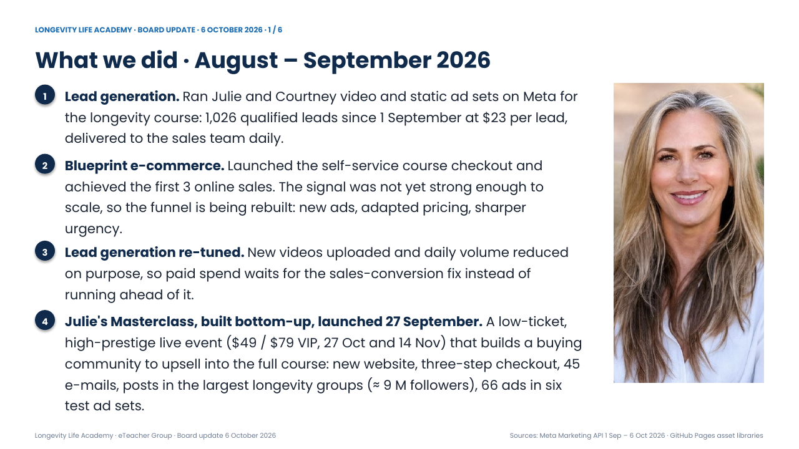
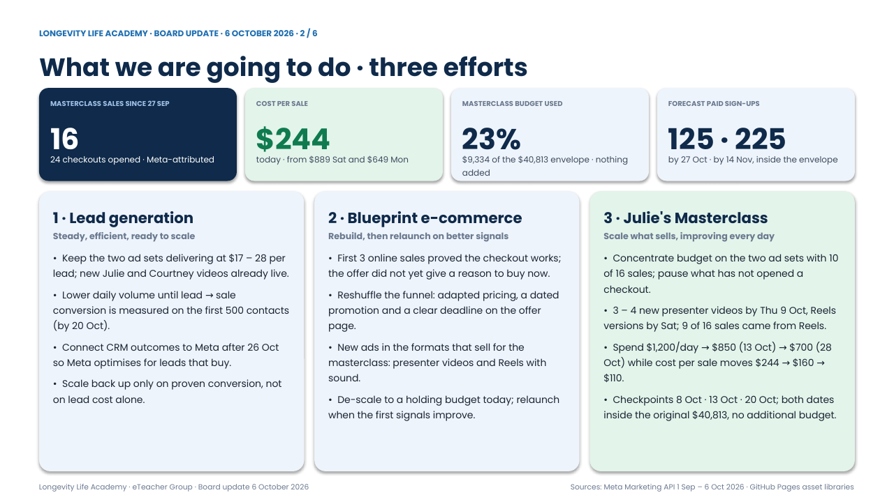
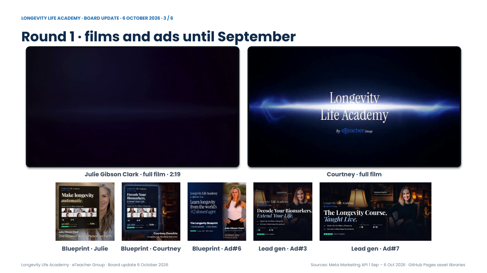
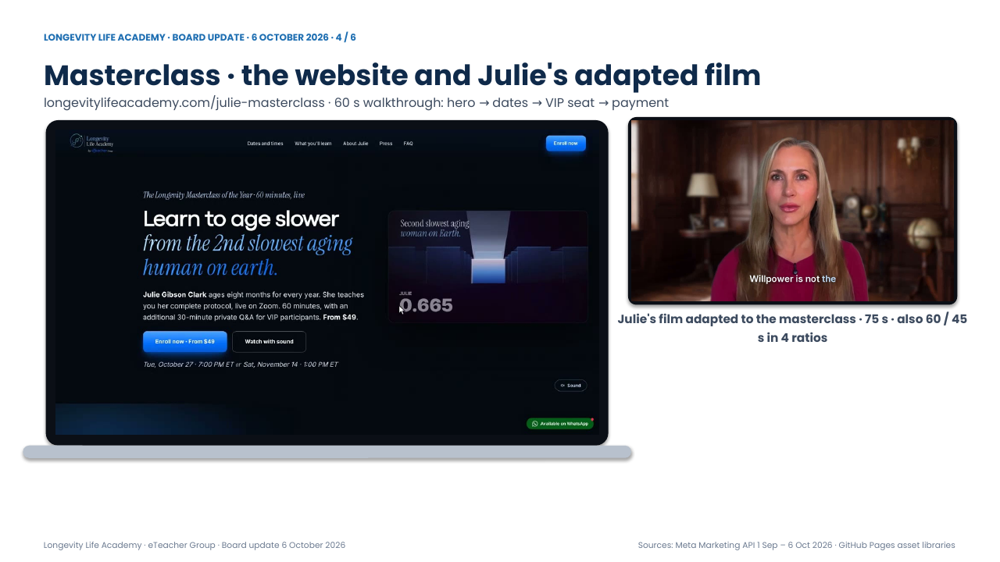
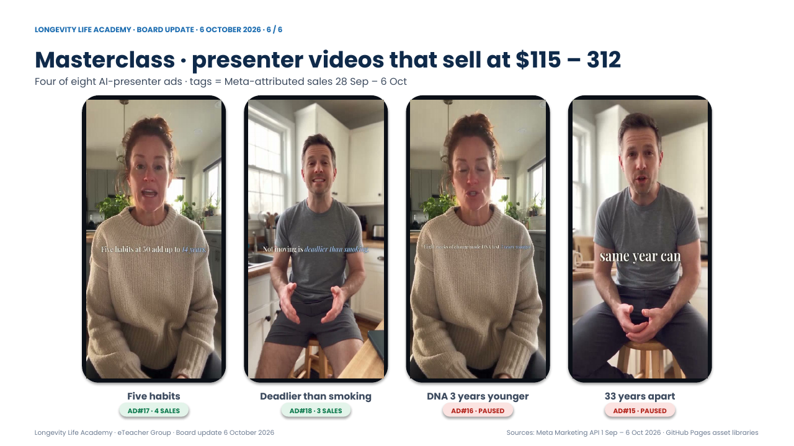

Embedded videos extracted from the downloaded PPTX, each decoded with ffmpeg: media1.mp4 h264 aac 127.899675 decode OK media10.mp4 h264 aac 68.757000 decode OK media11.mp4 h264 aac 80.853000 decode OK media2.mp4 h264 aac 101.077000 decode OK media3.mp4 h264 61.533333 decode OK media4.mp4 h264 aac 71.936000 decode OK media5.mp4 h264 aac 15.018000 decode OK media6.mp4 h264 aac 15.018000 decode OK media7.mp4 h264 aac 15.018000 decode OK media8.mp4 h264 aac 68.672000 decode OK media9.mp4 h264 aac 74.602000 decode OK




